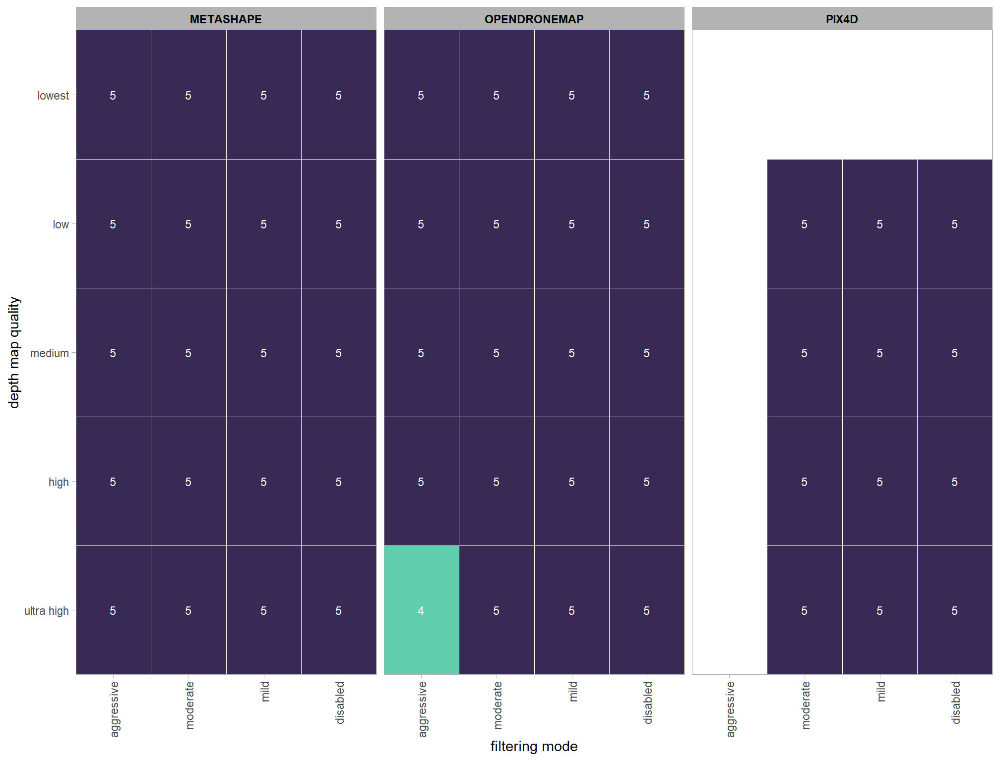
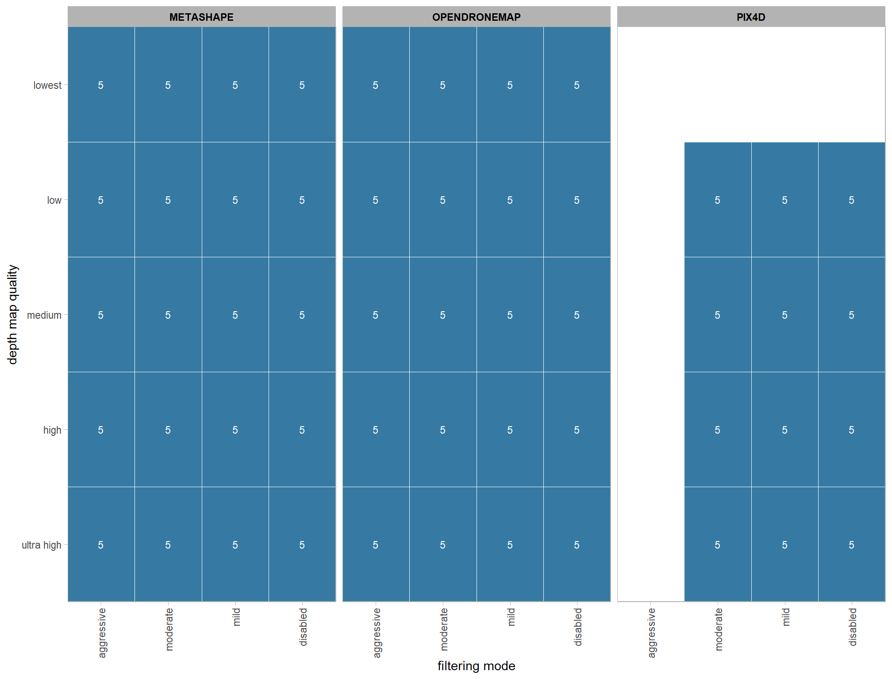
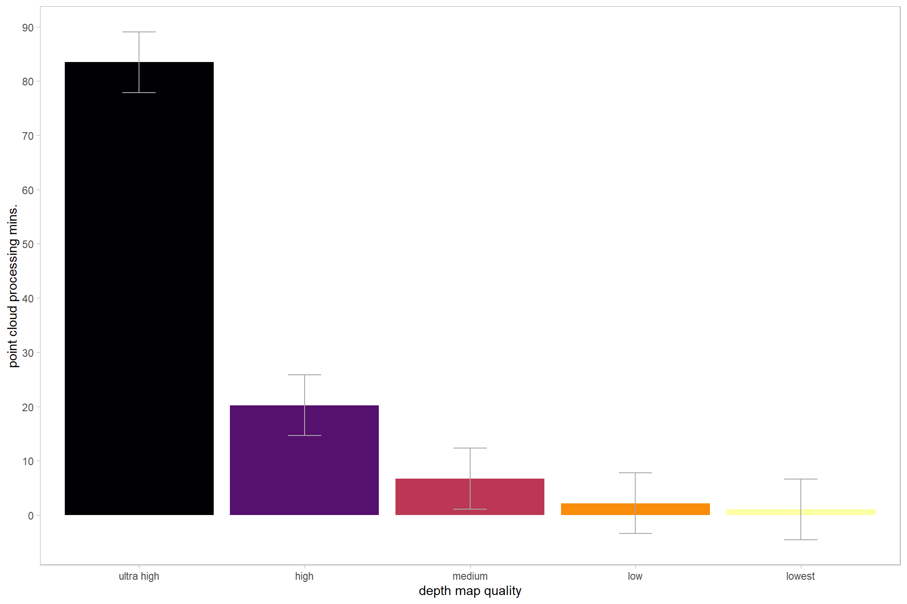
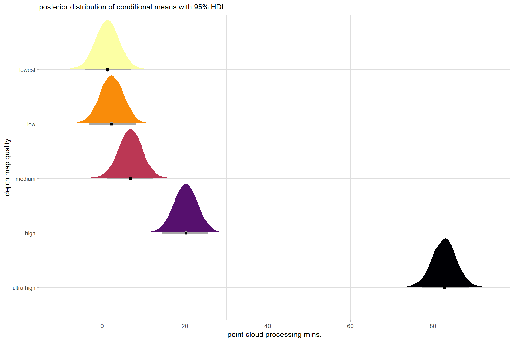
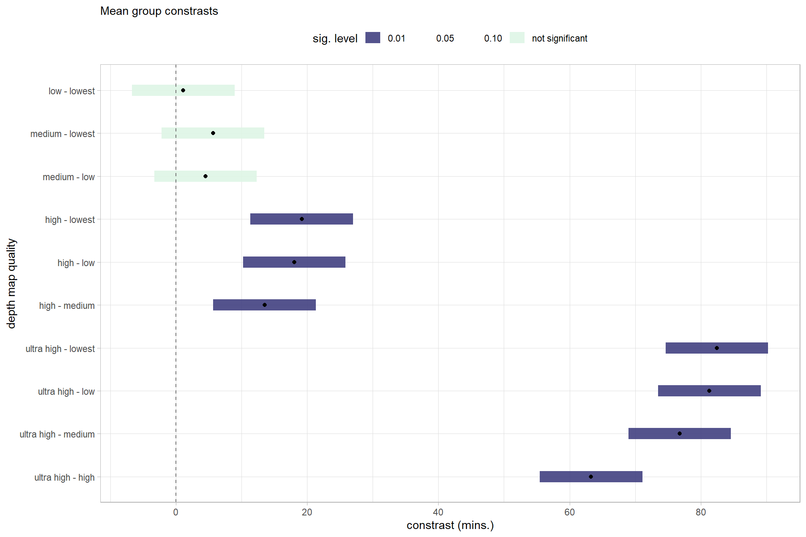
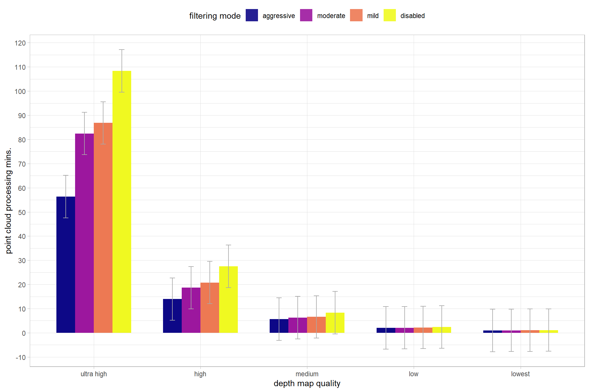

Section 4 Statistical Analysis: Processing Time
In this section, we’ll evaluate the influence of the processing parameters on point cloud processing time. This data was described in this section.
The objective of this study is to determine the influence of different structure from motion (SfM) software (e.g. Agisoft Metashap, OpenDroneMap, Pix4D) and processing parameters on processing time needed to create the data required for quantifying forest structure from UAS imagery. The data required includes: i) SfM-derived point cloud(s) in .laz or .las format, and ii) data extracted from these point clouds such as canopy height models (CHM), tree locations, and tree measurments (height and diameter).
All of the predictor variables of interest in this study are categorical (i.e. factor or nominal) while the predicted variables are metric and include processing time (continuous > 0) and F-score (ranges from 0-1). This type of statistical analysis is described in the second edition of Kruschke’s Doing Bayesian data analysis (2015):
This chapter considers data structures that consist of a metric predicted variable and two (or more) nominal predictors….Data structures of the type considered in this chapter are often encountered in real research. For example, we might want to predict monetary income from political party affiliation and religious affiliation, or we might want to predict galvanic skin response to different combinations of categories of visual stimulus and categories of auditory stimulus. As mentioned in the previous chapter, this type of data structure can arise from experiments or from observational studies. In experiments, the researcher assigns the categories (at random) to the experimental subjects. In observational studies, both the nominal predictor values and the metric predicted value are generated by processes outside the direct control of the researcher.
The traditional treatment of this sort of data structure is called multifactor analysis of variance (ANOVA). Our Bayesian approach will be a hierarchical generalization of the traditional ANOVA model. The chapter also considers generalizations of the traditional models, because it is straight forward in Bayesian software to implement heavy-tailed distributions to accommodate outliers, along with hierarchical structure to accommodate heterogeneous variances in the different groups. Kruschke (2015, pp.583–584)
The following analysis will expand the traditional mixed ANOVA approach following the methods outlined by Kassambara in the Comparing Multiple Means in R online course to build a Bayesian approach based on Kruschke (2015). This analysis was greatly enhanced by A. Solomon Kurz’s ebook supplement to Kruschke (2015).
4.1 One Nominal Predictor
We’ll start by exploring the influence of the depth map generation quality parameter on the point cloud processing time.
4.1.1 Summary Statistics
Summary statistics by group:
ptcld_processing_data %>%
dplyr::group_by(depth_maps_generation_quality) %>%
dplyr::summarise(
mean_processing_mins = mean(timer_total_time_mins, na.rm = T)
# , med_processing_mins = median(timer_total_time_mins, na.rm = T)
, sd_processing_mins = sd(timer_total_time_mins, na.rm = T)
, n = dplyr::n()
) %>%
kableExtra::kbl(digits = 1, caption = "summary statistics: point cloud processing time by depth map quality") %>%
kableExtra::kable_styling()| depth_maps_generation_quality | mean_processing_mins | sd_processing_mins | n |
|---|---|---|---|
| ultra high | 228.1 | 151.5 | 23 |
| high | 37.0 | 16.5 | 24 |
| medium | 9.1 | 2.1 | 24 |
| low | 2.3 | 0.3 | 24 |
| lowest | 0.8 | 0.1 | 24 |
4.1.2 Linear Model
We can use a linear model to obtain means by group:
lm1_temp = lm(
timer_total_time_mins ~ 0 + depth_maps_generation_quality
, data = ptcld_processing_data
)
# summary
lm1_temp %>%
broom::tidy() %>%
mutate(term = stringr::str_remove_all(term, "depth_maps_generation_quality")) %>%
kableExtra::kbl(digits = 2, caption = "linear model: point cloud processing time by depth map quality") %>%
kableExtra::kable_styling()| term | estimate | std.error | statistic | p.value |
|---|---|---|---|---|
| ultra high | 228.08 | 13.96 | 16.33 | 0.00 |
| high | 37.00 | 13.67 | 2.71 | 0.01 |
| medium | 9.13 | 13.67 | 0.67 | 0.51 |
| low | 2.25 | 13.67 | 0.16 | 0.87 |
| lowest | 0.82 | 13.67 | 0.06 | 0.95 |
and plot these means with 95% confidence interval
lm1_temp %>%
broom::tidy() %>%
dplyr::bind_cols(
lm1_temp %>%
confint() %>%
dplyr::as_tibble() %>%
dplyr::rename(lower = 1, upper = 2)
) %>%
mutate(
term = term %>%
stringr::str_remove_all("depth_maps_generation_quality") %>%
factor(
ordered = TRUE
, levels = c(
"lowest"
, "low"
, "medium"
, "high"
, "ultra high"
)
) %>% forcats::fct_rev()
) %>%
ggplot(
mapping = aes(x = term, y = estimate, fill = term)
) +
geom_col() +
geom_errorbar(aes(ymin = lower, ymax = upper), width = 0.2, color = "gray66") +
scale_fill_viridis_d(option = "inferno") +
scale_y_continuous(breaks = scales::extended_breaks(n=8)) +
labs(x = "depth map quality", y = "point cloud processing mins.") +
theme_light() +
theme(legend.position = "none", panel.grid.major = element_blank(), panel.grid.minor = element_blank())
4.1.3 ANOVA
Finally, one-way ANOVA to test for differences in group means
aov1_temp = aov(
timer_total_time_mins ~ 0 + depth_maps_generation_quality
, data = ptcld_processing_data
)
# summary
aov1_temp %>%
broom::tidy() %>%
kableExtra::kbl(digits = 2, caption = "one-way ANOVA: point cloud processing time by depth map quality") %>%
kableExtra::kable_styling()| term | df | sumsq | meansq | statistic | p.value |
|---|---|---|---|---|---|
| depth_maps_generation_quality | 5 | 1231482.4 | 246296.49 | 54.92 | 0 |
| Residuals | 114 | 511263.4 | 4484.77 | NA | NA |
The sum of squared residuals is the same between the linear model and the ANOVA model
# RSS
identical(
# linear model
lm1_temp$residuals %>%
dplyr::as_tibble() %>%
mutate(value=value^2) %>%
dplyr::pull(value) %>%
sum()
# anova
, summary(aov1_temp)[[1]][["Sum Sq"]][[2]]
)## [1] TRUE# F value
identical(
# linear model
summary(lm1_temp)$fstatistic["value"] %>% unname() %>% round(6)
# anova
, summary(aov1_temp)[[1]][["F value"]][[1]] %>% unname() %>% round(6)
)## [1] TRUEwe can use the emmeans package to compare and contrast the mean estimates by group using Tukey’s Honest Significant Differences method.
em1_temp = emmeans::contrast(
emmeans::emmeans(
lm1_temp, ~ depth_maps_generation_quality
)
, method = "tukey"
) %>%
dplyr::as_tibble() %>%
dplyr::mutate(
upper = estimate+SE
, lower = estimate-SE
, sig_lvl = dplyr::case_when(
p.value <= 0.01 ~ "0.01"
, p.value <= 0.05 ~ "0.05"
, p.value <= 0.1 ~ "0.10"
, T ~ "not significant"
) %>%
factor(
ordered = T
, levels = c(
"0.01"
, "0.05"
, "0.10"
, "not significant"
)
)
, sorter = contrast %>%
stringr::word(1, sep = "-") %>%
stringr::str_squish() %>%
factor(
ordered = T
, levels = levels(ptcld_processing_data$depth_maps_generation_quality)
)
, sorter2 = contrast %>%
stringr::word(-1, sep = "-") %>%
stringr::str_squish() %>%
factor(
ordered = T
, levels = levels(ptcld_processing_data$depth_maps_generation_quality)
)
, contrast = contrast %>% forcats::fct_reorder(
paste0(as.numeric(sorter), as.numeric(sorter2)) %>%
as.numeric()
)
)
# plot
em1_temp %>%
# plot
ggplot(mapping = aes(y = contrast)) +
geom_linerange(
mapping = aes(xmin = lower, xmax = upper, color = sig_lvl)
, size = 5
, alpha = 0.8
) +
geom_point(mapping = aes(x = estimate)) +
geom_vline(xintercept = 0, linetype = "dashed", color = "gray44") +
scale_color_grey() +
scale_x_continuous(breaks = scales::extended_breaks(n=8)) +
labs(
y = "depth map quality"
, x = "constrast (mins.)"
, subtitle = "Tukey test of mean group constrasts"
, color = "sig. level"
) +
theme_light() +
theme(
legend.position = "top"
, legend.direction = "horizontal"
)and view the contrasts in a table
em1_temp %>%
dplyr::arrange(desc(contrast)) %>%
dplyr::select(contrast, estimate, lower, upper, p.value) %>%
kableExtra::kbl(
digits = 2, caption = "Tukey's HSD: depth map quality mean processing time constrasts"
) %>%
kableExtra::kable_styling() %>%
kableExtra::scroll_box(width = "7in", height = "6in")| contrast | estimate | lower | upper | p.value |
|---|---|---|---|---|
| low - lowest | 1.43 | -17.90 | 20.76 | 1.00 |
| medium - lowest | 8.31 | -11.02 | 27.65 | 0.99 |
| medium - low | 6.88 | -12.45 | 26.22 | 1.00 |
| high - lowest | 36.18 | 16.85 | 55.52 | 0.34 |
| high - low | 34.75 | 15.42 | 54.09 | 0.38 |
| high - medium | 27.87 | 8.54 | 47.20 | 0.60 |
| ultra high - lowest | 227.26 | 207.72 | 246.80 | 0.00 |
| ultra high - low | 225.83 | 206.29 | 245.37 | 0.00 |
| ultra high - medium | 218.95 | 199.41 | 238.49 | 0.00 |
| ultra high - high | 191.08 | 171.54 | 210.62 | 0.00 |
4.1.4 Bayesian
Kruschke (2015) notes:
The terminology, “analysis of variance,” comes from a decomposition of overall data variance into within-group variance and between-group variance (Fisher, 1925). Algebraically, the sum of squared deviations of the scores from their overall mean equals the sum of squared deviations of the scores from their respective group means plus the sum of squared deviations of the group means from the overall mean. In other words, the total variance can be partitioned into within-group variance plus between-group variance. Because one definition of the word “analysis” is separation into constituent parts, the term ANOVA accurately describes the underlying algebra in the traditional methods. That algebraic relation is not used in the hierarchical Bayesian approach presented here. The Bayesian method can estimate component variances, however. Therefore, the Bayesian approach is not ANOVA, but is analogous to ANOVA. (p. 556)
and see section 19 from Kurz’s ebook supplement
The metric predicted variable with one nominal predictor variable model has the form:
\[\begin{align*} y_{i} &\sim {\sf Normal} \bigl(\mu_{i}, \sigma_{y} \bigr) \\ \mu_{i} &= \beta_0 + \sum_{j=1}^{J} \beta_{1[j]} x_{1[j]} \bigl(i\bigr) \\ \beta_{0} &\sim {\sf Normal} (0,10) \\ \beta_{1[j]} &\sim {\sf Normal} (0,\sigma_{\beta_{1}}) \\ \sigma_{\beta_{1}} &\sim {\sf uniform} (0,100) \\ \sigma_{y} &\sim {\sf uniform} (0,100) \\ \end{align*}\]
, where \(j\) is the depth map generation quality setting corresponding to observation \(i\)
to start, we’ll use the default brms::brm prior settings which may not match those described in the model specification above
brms1_mod = brms::brm(
formula = timer_total_time_mins ~ 1 + (1 | depth_maps_generation_quality)
, data = ptcld_processing_data
, family = brms::brmsfamily(family = "gaussian")
, iter = 3000, warmup = 1000, chains = 4
, file = paste0(rootdir, "/fits/brms1_mod")
)check the trace plots for problems with convergence of the Markov chains

check the prior distributions
| prior | class | coef | group | resp | dpar | nlpar | lb | ub | source |
|---|---|---|---|---|---|---|---|---|---|
| student_t(3, 8.2, 11) | Intercept | default | |||||||
| student_t(3, 0, 11) | sd | 0 | default | ||||||
| sd | depth_maps_generation_quality | default | |||||||
| sd | Intercept | depth_maps_generation_quality | default | ||||||
| student_t(3, 0, 11) | sigma | 0 | default |
The brms::brm model summary
brms1_mod %>%
brms::posterior_summary() %>%
as.data.frame() %>%
tibble::rownames_to_column(var = "parameter") %>%
dplyr::rename_with(tolower) %>%
dplyr::filter(
stringr::str_starts(parameter, "b_")
| stringr::str_starts(parameter, "r_")
| parameter == "sigma"
) %>%
dplyr::mutate(
parameter = parameter %>%
stringr::str_remove_all("b_depth_maps_generation_quality") %>%
stringr::str_remove_all("r_depth_maps_generation_quality")
) %>%
kableExtra::kbl(digits = 2, caption = "Bayesian one nominal predictor: point cloud processing time by depth map quality") %>%
kableExtra::kable_styling()| parameter | estimate | est.error | q2.5 | q97.5 |
|---|---|---|---|---|
| b_Intercept | 15.54 | 15.65 | -9.14 | 53.41 |
| sigma | 66.70 | 4.49 | 58.74 | 76.19 |
| [ultra.high,Intercept] | 205.69 | 21.22 | 161.01 | 244.50 |
| [high,Intercept] | 20.93 | 20.62 | -22.23 | 58.58 |
| [medium,Intercept] | -5.96 | 20.20 | -48.87 | 30.74 |
| [low,Intercept] | -12.93 | 20.01 | -55.59 | 23.99 |
| [lowest,Intercept] | -14.01 | 20.12 | -56.17 | 22.71 |
With the stats::coef function, we can get the group-level summaries in a “non-deflection” metric. In the model, the group means represented by \(\beta_{1[j]}\) are deflections from overall baseline, such that the deflections sum to zero (see Kruschke (2015, p.554)). Summaries of the group-specific deflections are available via the brms::ranef function.
stats::coef(brms1_mod) %>%
as.data.frame() %>%
tibble::rownames_to_column(var = "group") %>%
dplyr::rename_with(
.cols = -c("group")
, .fn = ~ stringr::str_remove_all(.x, "depth_maps_generation_quality.")
) %>%
kableExtra::kbl(digits = 2, caption = "brms::brm model: point cloud processing time by depth map quality") %>%
kableExtra::kable_styling()| group | Estimate.Intercept | Est.Error.Intercept | Q2.5.Intercept | Q97.5.Intercept |
|---|---|---|---|---|
| ultra high | 221.23 | 14.31 | 193.46 | 249.45 |
| high | 36.48 | 13.87 | 9.37 | 64.11 |
| medium | 9.58 | 13.30 | -16.80 | 35.64 |
| low | 2.61 | 13.28 | -23.33 | 28.35 |
| lowest | 1.53 | 13.32 | -24.21 | 28.34 |
We can look at the model noise standard deviation \(\sigma_y\)
# extract the posterior draws
brms::as_draws_df(brms1_mod) %>%
# plot
ggplot(aes(x = sigma, y = 0)) +
tidybayes::stat_dotsinterval(
point_interval = median_hdi, .width = .95
, justification = -0.04
, shape = 21, point_size = 3
, quantiles = 100
) +
scale_y_continuous(NULL, breaks = NULL) +
xlab(latex2exp::TeX("$\\sigma_y$")) +
theme_light()
plot the posterior distributions of the conditional means with the median processing time and the 95% highest posterior density interval (HDI)
ptcld_processing_data %>%
dplyr::distinct(depth_maps_generation_quality) %>%
tidybayes::add_epred_draws(brms1_mod) %>%
dplyr::mutate(value = .epred) %>%
# plot
ggplot(
mapping = aes(
x = value, y = depth_maps_generation_quality
, fill = depth_maps_generation_quality
)
) +
tidybayes::stat_halfeye(
point_interval = median_hdi, .width = .95
, interval_color = "gray66"
, shape = 21, point_color = "gray66", point_fill = "black"
, justification = -0.01
) +
# tidybayes::stat_dotsinterval(
# point_interval = median_hdi, .width = .95
# , shape = 21, point_fill = "gray", justification = -0.04
# , quantiles = 100
# ) +
scale_fill_viridis_d(option = "inferno") +
scale_x_continuous(breaks = scales::extended_breaks(n=8)) +
labs(
y = "depth map quality", x = "point cloud processing mins."
, subtitle = "posterior distribution of conditional means with 95% HDI"
) +
theme_light() +
theme(legend.position = "none")
we can also make pairwise comparisons
brms1_mod %>%
tidybayes::spread_draws(r_depth_maps_generation_quality[depth_maps_generation_quality]) %>%
dplyr::mutate(
depth_maps_generation_quality = depth_maps_generation_quality %>%
stringr::str_replace_all("\\.", " ") %>%
factor(
levels = levels(ptcld_processing_data$depth_maps_generation_quality)
, ordered = T
)
) %>%
dplyr::rename(value = r_depth_maps_generation_quality) %>%
tidybayes::compare_levels(value, by = depth_maps_generation_quality) %>%
ggplot(aes(x = value, y = depth_maps_generation_quality)) +
tidybayes::stat_halfeye(
point_interval = median_hdi, .width = .95
, slab_fill = "gray22", slab_alpha = 1
, interval_color = "gray66", point_color = "gray66", point_fill = "black"
, shape = 21
, justification = -0.01
) +
geom_vline(xintercept = 0, linetype = "dashed", color = "gray44") +
scale_x_continuous(breaks = scales::extended_breaks(n=8)) +
labs(
y = "depth map quality"
, x = "constrast (mins.)"
, subtitle = "95% HDI of the posterior distribution of conditional mean group constrasts"
) +
theme_light() +
theme(legend.position = "none")
and summarize these contrasts
# # can also use the following as substitute for the "tidybayes::spread_draws" used above to get same result
ptcld_processing_data %>%
dplyr::distinct(depth_maps_generation_quality) %>%
tidybayes::add_epred_draws(brms1_mod) %>%
dplyr::mutate(value = .epred) %>%
tidybayes::compare_levels(value, by = depth_maps_generation_quality) %>%
tidybayes::median_hdi() %>%
select(-c(.point,.interval)) %>%
kableExtra::kbl(digits = 2, caption = "brms::brm model: 95% HDI of the posterior distribution of conditional mean group constrasts") %>%
kableExtra::kable_styling()| depth_maps_generation_quality | value | .lower | .upper | .width |
|---|---|---|---|---|
| high - ultra high | -184.81 | -223.80 | -145.53 | 0.95 |
| low - medium | -7.07 | -43.55 | 30.70 | 0.95 |
| lowest - low | -0.94 | -38.29 | 35.85 | 0.95 |
| medium - high | -26.87 | -66.14 | 10.28 | 0.95 |
4.2 Two Nominal Predictors
Now, we’ll determine the combined influence of the depth map generation quality and the depth map filtering parameters on the point cloud processing time.
4.2.1 Summary Statistics
Summary statistics by group:
ptcld_processing_data %>%
dplyr::group_by(depth_maps_generation_quality, depth_maps_generation_filtering_mode) %>%
dplyr::summarise(
mean_processing_mins = mean(timer_total_time_mins, na.rm = T)
# , med_processing_mins = median(timer_total_time_mins, na.rm = T)
, sd_processing_mins = sd(timer_total_time_mins, na.rm = T)
, n = dplyr::n()
) %>%
kableExtra::kbl(
digits = 1
, caption = "summary statistics: point cloud processing time by depth map quality and filtering mode"
, col.names = c(
"depth map quality"
, "filtering mode"
, "mean time"
, "sd"
, "n"
)
) %>%
kableExtra::kable_styling() %>%
kableExtra::scroll_box(width = "7in", height = "6in")| depth map quality | filtering mode | mean time | sd | n |
|---|---|---|---|---|
| ultra high | aggressive | 126.8 | 58.3 | 6 |
| ultra high | moderate | 168.4 | 89.3 | 6 |
| ultra high | mild | 259.9 | 198.9 | 6 |
| ultra high | disabled | 383.1 | 101.0 | 5 |
| high | aggressive | 26.1 | 4.9 | 6 |
| high | moderate | 29.4 | 3.5 | 6 |
| high | mild | 31.6 | 4.5 | 6 |
| high | disabled | 61.0 | 16.2 | 6 |
| medium | aggressive | 7.4 | 0.7 | 6 |
| medium | moderate | 8.2 | 0.8 | 6 |
| medium | mild | 9.6 | 2.2 | 6 |
| medium | disabled | 11.4 | 2.1 | 6 |
| low | aggressive | 2.0 | 0.2 | 6 |
| low | moderate | 2.2 | 0.2 | 6 |
| low | mild | 2.3 | 0.2 | 6 |
| low | disabled | 2.5 | 0.3 | 6 |
| lowest | aggressive | 0.8 | 0.1 | 6 |
| lowest | moderate | 0.8 | 0.1 | 6 |
| lowest | mild | 0.8 | 0.1 | 6 |
| lowest | disabled | 0.9 | 0.1 | 6 |
4.2.2 Linear Model
We can use a linear model to obtain means by group:
lm2_temp = lm(
timer_total_time_mins ~ 1 +
depth_maps_generation_quality +
depth_maps_generation_filtering_mode +
depth_maps_generation_quality:depth_maps_generation_filtering_mode
, data = ptcld_processing_data
)
# summary
predict(
lm2_temp
, newdata = ptcld_processing_data %>%
dplyr::distinct(depth_maps_generation_quality, depth_maps_generation_filtering_mode)
, interval = "confidence"
) %>%
dplyr::as_tibble() %>%
dplyr::bind_cols(
ptcld_processing_data %>%
dplyr::distinct(depth_maps_generation_quality, depth_maps_generation_filtering_mode)
) %>%
dplyr::relocate(depth_maps_generation_quality, depth_maps_generation_filtering_mode) %>%
dplyr::arrange(depth_maps_generation_quality, depth_maps_generation_filtering_mode) %>%
kableExtra::kbl(
digits = 1
, caption = "linear model: point cloud processing time by depth map quality and filtering mode"
, col.names = c(
"depth map quality"
, "filtering mode"
, "y_hat"
, "q2.5"
, "q97.5"
)
) %>%
kableExtra::kable_styling() %>%
kableExtra::scroll_box(width = "7in", height = "6in")| depth map quality | filtering mode | y_hat | q2.5 | q97.5 |
|---|---|---|---|---|
| ultra high | aggressive | 126.8 | 82.4 | 171.2 |
| ultra high | moderate | 168.4 | 124.0 | 212.8 |
| ultra high | mild | 259.9 | 215.5 | 304.3 |
| ultra high | disabled | 383.1 | 334.5 | 431.8 |
| high | aggressive | 26.1 | -18.3 | 70.4 |
| high | moderate | 29.4 | -15.0 | 73.8 |
| high | mild | 31.6 | -12.8 | 76.0 |
| high | disabled | 61.0 | 16.6 | 105.4 |
| medium | aggressive | 7.4 | -37.0 | 51.7 |
| medium | moderate | 8.2 | -36.2 | 52.6 |
| medium | mild | 9.6 | -34.8 | 54.0 |
| medium | disabled | 11.4 | -33.0 | 55.8 |
| low | aggressive | 2.0 | -42.4 | 46.4 |
| low | moderate | 2.2 | -42.2 | 46.6 |
| low | mild | 2.3 | -42.1 | 46.7 |
| low | disabled | 2.5 | -41.9 | 46.9 |
| lowest | aggressive | 0.8 | -43.6 | 45.2 |
| lowest | moderate | 0.8 | -43.6 | 45.2 |
| lowest | mild | 0.8 | -43.5 | 45.2 |
| lowest | disabled | 0.9 | -43.5 | 45.3 |
and plot these means with 95% confidence interval
predict(
lm2_temp
, newdata = ptcld_processing_data %>%
dplyr::distinct(depth_maps_generation_quality, depth_maps_generation_filtering_mode)
, interval = "confidence"
) %>%
dplyr::as_tibble() %>%
dplyr::bind_cols(
ptcld_processing_data %>%
dplyr::distinct(depth_maps_generation_quality, depth_maps_generation_filtering_mode)
) %>%
ggplot(
mapping = aes(
y = fit
, x = depth_maps_generation_quality
, fill = depth_maps_generation_filtering_mode
, group = depth_maps_generation_filtering_mode
)
) +
geom_col(width = 0.7, position = "dodge") +
geom_errorbar(
mapping = aes(ymin = lwr, ymax = upr)
, width = 0.2, color = "gray66"
, position = position_dodge(width = 0.7)
) +
scale_fill_viridis_d(option = "plasma") +
scale_y_continuous(breaks = scales::extended_breaks(n=14)) +
labs(
fill = "filtering mode"
, x = "depth map quality"
, y = "point cloud processing mins."
) +
theme_light() +
theme(
legend.position = "top"
, legend.direction = "horizontal"
) +
guides(
fill = guide_legend(override.aes = list(alpha = 0.9))
)
4.2.3 ANOVA
Finally, ANOVA to test for differences in group means
aov2_temp = aov(
timer_total_time_mins ~ 1 +
depth_maps_generation_quality +
depth_maps_generation_filtering_mode +
depth_maps_generation_quality:depth_maps_generation_filtering_mode
, data = ptcld_processing_data
)
# summary
aov2_temp %>%
broom::tidy() %>%
kableExtra::kbl(digits = 2, caption = "two-way ANOVA: point cloud processing time by depth map quality and filtering mode") %>%
kableExtra::kable_styling()| term | df | sumsq | meansq | statistic | p.value |
|---|---|---|---|---|---|
| depth_maps_generation_quality | 4 | 884385.62 | 221096.41 | 73.63 | 0 |
| depth_maps_generation_filtering_mode | 3 | 52312.64 | 17437.55 | 5.81 | 0 |
| depth_maps_generation_quality:depth_maps_generation_filtering_mode | 12 | 161688.50 | 13474.04 | 4.49 | 0 |
| Residuals | 99 | 297262.23 | 3002.65 | NA | NA |
We can perform pairwise comparisons of the filtering mode between at each depth map quality level
# Pairwise comparisons between group levels
ptcld_processing_data %>%
group_by(depth_maps_generation_quality) %>%
rstatix::pairwise_t_test(
timer_total_time_mins ~ depth_maps_generation_filtering_mode
, p.adjust.method = "bonferroni"
) %>%
dplyr::select(-c(n1,p,p.signif,.y.)) %>%
kableExtra::kbl(
digits = 1
, caption = "Pairwise comparisons between filtering mode at each depth map quality group"
) %>%
kableExtra::kable_styling() %>%
kableExtra::scroll_box(width = "7in", height = "6in")| depth_maps_generation_quality | group1 | group2 | n2 | p.adj | p.adj.signif |
|---|---|---|---|---|---|
| ultra high | aggressive | moderate | 6 | 1.0 | ns |
| ultra high | aggressive | mild | 6 | 0.5 | ns |
| ultra high | moderate | mild | 6 | 1.0 | ns |
| ultra high | aggressive | disabled | 5 | 0.0 |
|
| ultra high | moderate | disabled | 5 | 0.1 | ns |
| ultra high | mild | disabled | 5 | 0.7 | ns |
| high | aggressive | moderate | 6 | 1.0 | ns |
| high | aggressive | mild | 6 | 1.0 | ns |
| high | moderate | mild | 6 | 1.0 | ns |
| high | aggressive | disabled | 6 | 0.0 | **** |
| high | moderate | disabled | 6 | 0.0 | **** |
| high | mild | disabled | 6 | 0.0 | **** |
| medium | aggressive | moderate | 6 | 1.0 | ns |
| medium | aggressive | mild | 6 | 0.1 | ns |
| medium | moderate | mild | 6 | 0.8 | ns |
| medium | aggressive | disabled | 6 | 0.0 | ** |
| medium | moderate | disabled | 6 | 0.0 |
|
| medium | mild | disabled | 6 | 0.4 | ns |
| low | aggressive | moderate | 6 | 1.0 | ns |
| low | aggressive | mild | 6 | 0.1 | ns |
| low | moderate | mild | 6 | 1.0 | ns |
| low | aggressive | disabled | 6 | 0.0 | ** |
| low | moderate | disabled | 6 | 0.2 | ns |
| low | mild | disabled | 6 | 1.0 | ns |
| lowest | aggressive | moderate | 6 | 1.0 | ns |
| lowest | aggressive | mild | 6 | 0.6 | ns |
| lowest | moderate | mild | 6 | 1.0 | ns |
| lowest | aggressive | disabled | 6 | 0.2 | ns |
| lowest | moderate | disabled | 6 | 1.0 | ns |
| lowest | mild | disabled | 6 | 1.0 | ns |
we can use the emmeans package to perform interaction analysis of the mean estimates using Tukey’s Honest Significant Differences method.
4.2.4 Bayesian
Kruschke (2015) describes the Hierarchical Bayesian approach to describe groups of metric data with multiple nominal predictors:
This chapter considers data structures that consist of a metric predicted variable and two (or more) nominal predictors….The traditional treatment of this sort of data structure is called multifactor analysis of variance (ANOVA). Our Bayesian approach will be a hierarchical generalization of the traditional ANOVA model. The chapter also considers generalizations of the traditional models, because it is straight forward in Bayesian software to implement heavy-tailed distributions to accommodate outliers, along with hierarchical structure to accommodate heterogeneous variances in the different groups. (pp. 583–584)
and see section 20 from Kurz’s ebook supplement
The metric predicted variable with two nominal predictor variables model has the form:
\[\begin{align*} y_{i} &\sim {\sf Normal} \bigl(\mu_{i}, \sigma_{y} \bigr) \\ \mu_{i} &= \beta_0 + \sum_{j} \beta_{1[j]} x_{1[j]} + \sum_{k} \beta_{2[k]} x_{2[k]} + \sum_{j,k} \beta_{1\times2[j,k]} x_{1\times2[j,k]} \\ \beta_{0} &\sim {\sf Normal} (0,100) \\ \beta_{1[j]} &\sim {\sf Normal} (0,\sigma_{\beta_{1}}) \\ \beta_{2[k]} &\sim {\sf Normal} (0,\sigma_{\beta_{2}}) \\ \beta_{1\times2[j,k]} &\sim {\sf Normal} (0,\sigma_{\beta_{1\times2}}) \\ \sigma_{\beta_{1}} &\sim {\sf Gamma} (1.28,0.005) \\ \sigma_{\beta_{2}} &\sim {\sf Gamma} (1.28,0.005) \\ \sigma_{\beta_{1\times2}} &\sim {\sf Gamma} (1.28,0.005) \\ \sigma_{y} &\sim {\sf Cauchy} (0,109) \\ \end{align*}\]
, where \(j\) is the depth map generation quality setting corresponding to observation \(i\) and \(k\) is the depth map filtering mode setting corresponding to observation \(i\)
for this model, we’ll define the priors following Kurz who notes that:
The noise standard deviation \(\sigma_y\) is depicted in the prior statement including the argument
class = sigma…in order to be weakly informative, we will use the half-Cauchy. Recall that since the brms default is to set the lower bound for any variance parameter to 0, there’s no need to worry about doing so ourselves. So even though the syntax only indicatescauchy, it’s understood to mean Cauchy with a lower bound at zero; since the mean is usually 0, that makes this a half-Cauchy…The tails of the half-Cauchy are sufficiently fat that, in practice, I’ve found it doesn’t matter much what you set the \(SD\) of its prior to.
# from Kurz:
gamma_a_b_from_omega_sigma <- function(mode, sd) {
if (mode <= 0) stop("mode must be > 0")
if (sd <= 0) stop("sd must be > 0")
rate <- (mode + sqrt(mode^2 + 4 * sd^2)) / (2 * sd^2)
shape <- 1 + mode * rate
return(list(shape = shape, rate = rate))
}
mean_y_temp <- mean(ptcld_processing_data$timer_total_time_mins)
sd_y_temp <- sd(ptcld_processing_data$timer_total_time_mins)
omega_temp <- sd_y_temp / 2
sigma_temp <- 2 * sd_y_temp
s_r_temp <- gamma_a_b_from_omega_sigma(mode = omega_temp, sd = sigma_temp)
stanvars_temp <-
brms::stanvar(mean_y_temp, name = "mean_y") +
brms::stanvar(sd_y_temp, name = "sd_y") +
brms::stanvar(s_r_temp$shape, name = "alpha") +
brms::stanvar(s_r_temp$rate, name = "beta")Now fit the model.
brms2_mod = brms::brm(
formula = timer_total_time_mins ~ 1 +
(1 | depth_maps_generation_quality) +
(1 | depth_maps_generation_filtering_mode) +
(1 | depth_maps_generation_quality:depth_maps_generation_filtering_mode)
, data = ptcld_processing_data
, family = brms::brmsfamily(family = "gaussian")
, iter = 4000, warmup = 2000, chains = 4
, prior = c(
brms::prior(normal(mean_y, sd_y * 5), class = "Intercept")
, brms::prior(gamma(alpha, beta), class = "sd")
, brms::prior(cauchy(0, sd_y), class = "sigma")
)
, stanvars = stanvars_temp
, file = paste0(rootdir, "/fits/brms2_mod")
)check the trace plots for problems with convergence of the Markov chains

check the prior distributions
| prior | class | coef | group | resp | dpar | nlpar | lb | ub | source |
|---|---|---|---|---|---|---|---|---|---|
| normal(mean_y, sd_y * 5) | Intercept | user | |||||||
| gamma(alpha, beta) | sd | 0 | user | ||||||
| sd | depth_maps_generation_filtering_mode | default | |||||||
| sd | Intercept | depth_maps_generation_filtering_mode | default | ||||||
| sd | depth_maps_generation_quality | default | |||||||
| sd | Intercept | depth_maps_generation_quality | default | ||||||
| sd | depth_maps_generation_quality:depth_maps_generation_filtering_mode | default | |||||||
| sd | Intercept | depth_maps_generation_quality:depth_maps_generation_filtering_mode | default | ||||||
| cauchy(0, sd_y) | sigma | 0 | user |
The brms::brm model summary
brms2_mod %>%
brms::posterior_summary() %>%
as.data.frame() %>%
tibble::rownames_to_column(var = "parameter") %>%
dplyr::rename_with(tolower) %>%
dplyr::filter(
stringr::str_starts(parameter, "b_")
| stringr::str_starts(parameter, "r_")
| stringr::str_starts(parameter, "sd_")
| parameter == "sigma"
) %>%
dplyr::mutate(
parameter = parameter %>%
stringr::str_replace_all("depth_maps_generation_quality", "quality") %>%
stringr::str_replace_all("depth_maps_generation_filtering_mode", "filtering")
) %>%
kableExtra::kbl(digits = 2, caption = "Bayesian two nominal predictors: point cloud processing time by depth map quality and filtering mode") %>%
kableExtra::kable_styling() %>%
kableExtra::scroll_box(width = "7in", height = "6in")| parameter | estimate | est.error | q2.5 | q97.5 |
|---|---|---|---|---|
| b_Intercept | 58.99 | 70.77 | -80.25 | 202.63 |
| sd_filtering__Intercept | 38.51 | 34.01 | 2.51 | 130.31 |
| sd_quality__Intercept | 131.49 | 64.44 | 56.04 | 309.48 |
| sd_quality:filtering__Intercept | 47.63 | 13.18 | 26.78 | 78.24 |
| sigma | 55.55 | 4.01 | 48.34 | 63.88 |
| r_filtering[aggressive,Intercept] | -13.80 | 30.04 | -84.99 | 41.12 |
| r_filtering[moderate,Intercept] | -8.42 | 29.66 | -76.47 | 49.01 |
| r_filtering[mild,Intercept] | 2.12 | 29.25 | -60.19 | 65.14 |
| r_filtering[disabled,Intercept] | 18.55 | 30.63 | -33.59 | 88.03 |
| r_quality[ultra.high,Intercept] | 163.23 | 69.91 | 25.31 | 307.89 |
| r_quality[high,Intercept] | -19.79 | 69.05 | -160.24 | 116.54 |
| r_quality[medium,Intercept] | -46.22 | 69.22 | -191.95 | 90.44 |
| r_quality[low,Intercept] | -52.79 | 69.40 | -200.08 | 82.48 |
| r_quality[lowest,Intercept] | -54.37 | 69.29 | -193.02 | 80.58 |
| r_quality:filtering[high_aggressive,Intercept] | 0.45 | 32.64 | -64.38 | 64.36 |
| r_quality:filtering[high_disabled,Intercept] | 2.82 | 33.06 | -62.89 | 68.29 |
| r_quality:filtering[high_mild,Intercept] | -7.77 | 32.79 | -73.82 | 56.86 |
| r_quality:filtering[high_moderate,Intercept] | -0.99 | 32.36 | -66.75 | 62.73 |
| r_quality:filtering[low_aggressive,Intercept] | 7.34 | 32.63 | -57.22 | 71.69 |
| r_quality:filtering[low_disabled,Intercept] | -17.71 | 33.17 | -86.12 | 47.44 |
| r_quality:filtering[low_mild,Intercept] | -5.07 | 32.11 | -68.95 | 56.74 |
| r_quality:filtering[low_moderate,Intercept] | 3.02 | 32.63 | -60.54 | 68.71 |
| r_quality:filtering[lowest_aggressive,Intercept] | 7.48 | 32.52 | -56.42 | 71.09 |
| r_quality:filtering[lowest_disabled,Intercept] | -17.59 | 33.29 | -83.95 | 47.75 |
| r_quality:filtering[lowest_mild,Intercept] | -4.61 | 32.65 | -69.63 | 59.25 |
| r_quality:filtering[lowest_moderate,Intercept] | 3.65 | 32.59 | -60.28 | 68.37 |
| r_quality:filtering[medium_aggressive,Intercept] | 6.34 | 32.52 | -58.65 | 69.55 |
| r_quality:filtering[medium_disabled,Intercept] | -16.01 | 33.72 | -84.87 | 49.60 |
| r_quality:filtering[medium_mild,Intercept] | -4.31 | 32.31 | -71.82 | 57.47 |
| r_quality:filtering[medium_moderate,Intercept] | 2.83 | 32.06 | -62.01 | 65.12 |
| r_quality:filtering[ultra.high_aggressive,Intercept] | -64.01 | 34.97 | -132.63 | 3.39 |
| r_quality:filtering[ultra.high_disabled,Intercept] | 109.18 | 39.90 | 39.89 | 194.24 |
| r_quality:filtering[ultra.high_mild,Intercept] | 28.75 | 34.36 | -35.73 | 101.72 |
| r_quality:filtering[ultra.high_moderate,Intercept] | -35.42 | 33.92 | -102.54 | 32.66 |
We can look at the model noise standard deviation \(\sigma_y\)
# extract the posterior draws
brms::as_draws_df(brms2_mod) %>%
# plot
ggplot(aes(x = sigma, y = 0)) +
tidybayes::stat_dotsinterval(
point_interval = median_hdi, .width = .95
, justification = -0.04
, shape = 21, point_size = 3
, quantiles = 100
) +
scale_y_continuous(NULL, breaks = NULL) +
xlab(latex2exp::TeX("$\\sigma_y$")) +
theme_light()
plot the posterior distributions of the conditional means with the median processing time and the 95% highest posterior density interval (HDI)
ptcld_processing_data %>%
dplyr::distinct(depth_maps_generation_quality, depth_maps_generation_filtering_mode) %>%
tidybayes::add_epred_draws(brms2_mod, allow_new_levels = T) %>%
dplyr::rename(value = .epred) %>%
dplyr::mutate(depth_maps_generation_quality = depth_maps_generation_quality %>% forcats::fct_rev()) %>%
# plot
ggplot(
mapping = aes(
y = value, x = depth_maps_generation_filtering_mode
, fill = depth_maps_generation_filtering_mode
)
) +
tidybayes::stat_eye(
point_interval = median_hdi, .width = .95
, slab_alpha = 0.9
, interval_color = "grey66", linewidth = 1
, shape = 21, point_color = "grey66", point_fill = "black", point_size = 1
) +
scale_fill_viridis_d(option = "plasma") +
scale_y_continuous(breaks = scales::extended_breaks(n=10)) +
facet_grid(cols = vars(depth_maps_generation_quality)) +
labs(
x = "filtering mode", y = "point cloud processing mins."
, subtitle = "posterior distribution of conditional means with 95% HDI"
, fill = "Filtering Mode"
) +
theme_light() +
theme(
legend.position = "none"
, legend.direction = "horizontal"
, axis.text.x = element_text(angle = 90)
, strip.text = element_text(color = "black", face = "bold")
) 
# guides(
# fill = guide_legend(reverse = T, override.aes = list(alpha = 1, color = NA, shape = NA, lwd = NA))
# )we can also make pairwise comparisons
ptcld_processing_data %>%
dplyr::distinct(depth_maps_generation_quality, depth_maps_generation_filtering_mode) %>%
tidybayes::add_epred_draws(brms2_mod, allow_new_levels = T) %>%
dplyr::rename(value = .epred) %>%
tidybayes::compare_levels(value, by = depth_maps_generation_quality) %>%
ggplot(
mapping = aes(
x = value, y = depth_maps_generation_quality
, fill = depth_maps_generation_filtering_mode
)
) +
tidybayes::stat_halfeye(
point_interval = median_hdi, .width = .95
, slab_alpha = 0.6
, interval_color = "gray66", interval_alpha = 0.7
, shape = 21, point_color = "gray66", point_fill = "black", point_alpha = 0.7
, justification = -0.01
) +
geom_vline(xintercept = 0, linetype = "dashed", color = "gray44") +
scale_fill_viridis_d(option = "plasma") +
scale_x_continuous(breaks = scales::extended_breaks(n=8)) +
# facet_grid(cols = vars(depth_maps_generation_filtering_mode)) +
labs(
y = "depth map quality"
, x = "constrast (mins.)"
, subtitle = "95% HDI of the posterior distribution of conditional mean group constrasts"
, fill = "Filtering Mode"
) +
theme_light() +
theme(
legend.position = "top"
, legend.direction = "horizontal"
) +
guides(
fill = guide_legend(reverse = T, override.aes = list(alpha = 1, color = NA, shape = NA, lwd = NA))
)
and summarize these contrasts
# # can also use the following as substitute for the "tidybayes::spread_draws" used above to get same result
ptcld_processing_data %>%
dplyr::distinct(depth_maps_generation_quality, depth_maps_generation_filtering_mode) %>%
tidybayes::add_epred_draws(brms2_mod, allow_new_levels = T) %>%
dplyr::rename(value = .epred) %>%
tidybayes::compare_levels(value, by = depth_maps_generation_quality) %>%
tidybayes::median_hdi() %>%
select(-c(.point,.interval,.width)) %>%
kableExtra::kbl(
digits = 1, caption = "brms::brm model: 95% HDI of the posterior distribution of conditional mean group constrasts"
, col.names = c(
"quality contrast"
, "filtering mode"
, "med constrast (mins.)"
, "lower"
, "upper"
)
) %>%
kableExtra::kable_styling() %>%
kableExtra::scroll_box(width = "7in", height = "6in")| quality contrast | filtering mode | med constrast (mins.) | lower | upper |
|---|---|---|---|---|
| high - ultra high | aggressive | -119.0 | -177.0 | -58.4 |
| high - ultra high | moderate | -148.8 | -206.1 | -87.9 |
| high - ultra high | mild | -219.6 | -279.4 | -164.5 |
| high - ultra high | disabled | -289.7 | -353.9 | -225.5 |
| low - medium | aggressive | -5.3 | -61.5 | 50.4 |
| low - medium | moderate | -7.2 | -63.4 | 52.1 |
| low - medium | mild | -7.7 | -65.3 | 51.1 |
| low - medium | disabled | -8.0 | -67.2 | 48.7 |
| lowest - low | aggressive | -1.3 | -62.1 | 53.0 |
| lowest - low | moderate | -0.9 | -59.6 | 55.5 |
| lowest - low | mild | -0.8 | -59.7 | 55.8 |
| lowest - low | disabled | -1.7 | -57.6 | 56.8 |
| medium - high | aggressive | -21.0 | -76.4 | 37.2 |
| medium - high | moderate | -22.7 | -77.8 | 33.8 |
| medium - high | mild | -23.0 | -81.0 | 33.6 |
| medium - high | disabled | -45.6 | -105.8 | 11.5 |
Kruschke (2015) notes that for the multiple nominal predictors model:
In applications with multiple levels of the factors, it is virtually always the case that we are interested in comparing particular levels with each other…. These sorts of comparisons, which involve levels of a single factor and collapse across the other factor(s), are called main effect comparisons or contrasts.(p. 595)
first, let’s collapse across the filtering mode to compare the depth map quality setting effect
ptcld_processing_data %>%
dplyr::distinct(depth_maps_generation_quality) %>%
tidybayes::add_epred_draws(
brms2_mod
# this part is crucial
, re_formula = ~ (1 | depth_maps_generation_quality)
) %>%
dplyr::rename(value = .epred) %>%
# plot
ggplot(
mapping = aes(
x = value, y = depth_maps_generation_quality
, fill = depth_maps_generation_quality
)
) +
tidybayes::stat_halfeye(
point_interval = median_hdi, .width = .95
, interval_color = "gray66"
, shape = 21, point_color = "gray66", point_fill = "black"
, justification = -0.01
) +
scale_fill_viridis_d(option = "inferno") +
scale_x_continuous(breaks = scales::extended_breaks(n=8)) +
labs(
y = "depth map quality", x = "point cloud processing mins."
, subtitle = "posterior distribution of conditional means with 95% HDI"
) +
theme_light() +
theme(legend.position = "none")